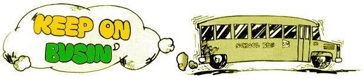

Issue No. 29 - September/October 1974
At the end of summer before last, when we were in the midst of arranging our lives around an old farmhouse on a small patch of land in the country, it became apparent that the money we had put away wasn't going to last us through the winter. Drastic action was called for: One or both of us had to go to work.
What an upsetting development! Full-time jobs would have destroyed the life we had planned on our little Florida homestead, but part-time work just didn't pay enough. We also rejected several small home-business ideas-raising worms, addressing envelopes, reading palms-and then noticed a recurring ad in our local newspaper: "Wanted: School bus drivers, men and women, we train you."
That's how it all began.
Over the last two years, school bus driving has proved to be an ideal job for us . . . and maybe for others who want to live simply but need an income. Granted, it isn't much of an income, but enough, we think, to appeal to livers of an alternative lifestyle. Especially since it also offers a working day of four hours or less, few job pressures, minimum training, no dress code and better than average wages for parttime employment . . . with the added benefit of paid Christmas, Easter and summer vacations.
Whether you can plan on driving for your whole income depends on how much money you need to live. A Spartan-like individual might be able to subsist by that means alone, but a couple or a cooperative group would find it more practical. In our case,- we like to think of ourselves as sharing one 40-hour-a-week job (but with the advantages of working the same hours at the same place and having the same time off).
Another good point about the job is that-in our area, anyway-it's easy to get. When we applied, we found the requirements to be minimal: a clean driving record, minimum age of 21, ability to pass a cursory physical examination and willingness to make a few appearances at a first aid class given free of charge by the Red Cross.
The "training program" consisted of reading the rules of the road, learning a few regulations that apply to trucks and school vehicles and jockeying a bus around for an hour or so. One quick and easy driving exam later, we were qualified operators.
A few words of encouragement for those who might be fearful of handling such a big machine: Driving a school bus really isn't much different from driving a car. True, the bus is a lot longer and a little fatter . . . but once you adjust to swinging wide on turns, it's easy to run. The newer models at our garage have power steering and power brakes, and a few even have automatic transmissions.
One thing few people realize is how much you can see from the driver's seat of a big motor coach. There are many mirrors and windows to facilitate vision, and it's very difficult for anyone-either inside or out-to occupy a space you can't easily scan at a glance. That's pretty important when you're trying to maintain order as well as drive safely.
Speaking of maintaining order, the kids aren't all that bad. A week before school started, we were picturing some sort of "Blackboard Jungle" scene with switchblade knives and a hijacking once a month. Actually, our passengers were surprisingly nice and cooperative. We always treated them like adults and never had a real problem . . . even though we found out later from our boss that we had both been given notoriously troublesome groups.
Another thought that occurred to us when we took the job was Thoreau's warning, "Beware of all enterprises that require new clothes." Well, Thoreau, it tuned out, would fit right in at our garage, where we see everyone from men in business suits to women in overalls. The only request the company makes is that females should not wear short dresses. A few do anyway and nobody hassles them. Long skirts are acceptable . . . and children hiding behind them are OK, too. Not knowing what the rules are elsewhere, we hate to generalize, but our company allows mothers and fathers to bring along up to three children of their own while they drive.
The outfit we work for pays $2.50 an hour. For a part-time job in a depressed rural area, that's pretty good (unless you're the Avon Lady-type or can stand to sell encyclopedias). We've found out recently, however, that what we make is low compared to the rates in many other places. A town just 30 miles from here offers $5.00 an hour, and across the state-in another hamlet comparable to ours-the figure is $5.80. For money like that, we could afford to work only two hours a day and still make over $100 a week between us.
Despite the job's advantages, there's a constant turnover (and thus a constant demand for drivers) at our company and every other we've checked out. Of a total of some 40 employees, perhaps 20 have been here for five years or more. The rest come and go with shocking regularity. People who are between jobs-or those like farmers and truck drivers whose occupations have off seasons-will work a month and disappear for two. There wasn't a day all year when anyone (however vaguely qualified) could not have walked in and been hired.
Maybe you're thinking that such high turnover in a fairly well-paid job must mean that the hours are terrible. Not so. The company pays us for two hours' work each morning and afternoon, in spite of the fact that we rarely drive longer than one hour on either shift. Our schedule goes like this: We check in at 7:00 a.m., begin driving at 7:15 and are finished and back in the garage by 8:00. Adding in a 15-minute coffee break, it turns out, in effect, that we're paid for one hour's travel time to and from work. Afternoons are a little rougher: We drive from 2:30 to 3:30 with no coffee break.
For people who don't like to work much, it's a good job. For people who don't like to get up early, it's painful. We belong to both categories. We're willing to admit that the hours do at least put us on a regular early schedule, but it sure can be hard to drag ourselves out of bed in the dark of a winter's morning.
The biggest disadvantage to driving a bus, though, is the job's morning and afternoon shifts. They split up the day so that we feel more tied down than we might had we worked a single period . . . and they put twice as many miles-to and from work- on our old truck.
About those paid vacations we mentioned: That was really kind of a come-on. The bus company doesn't actually offer such a benefit . . . but the government does, in the form of the unemployment compensation you can collect every time your weekly wages are below normal for your particular job. In the case of a school bus driver, it's possible for him or her to receive a statement of low earnings for any of the school holidays: teachers' meeting days, Thanksgiving, Christmas and Easter.
It's also possible for a driver to collect unemployment compensation all summer. Many of those at our company do so every year . . . and collect $50.00 a week for gardening, canning, etc., right around their own homesteads.
Of course, before you rush out and apply for a job like ours, you should stop and consider that many of the points we've mentioned are true only of our own town. In many places the situation is quite different. For instance: School buses are owned by the district in some rural areas, and are driven by the building maintenance crew as a part of their janitorial duties. In other localities, where bus drivers are union teamsters, the money is big and the openings few. Elsewhere still, the job requires one to be a mechanic as well as a driver.
There are also certain areas where individuals own buses and make bids on routes in much the sane manner as with rural mail routes. Getting into such a business involves the investment of quite a bit of money . . . but might be feasible for a co-op, a commune or even one person with the right kind of resources.
It's difficult to generalize about school bus driving because conditions vary so much from one area to the next. All the same, we think it deserves attention as a way to make a small living or just some extra money. If you're puzzling over where to settle down, you might even make the possibility of a driving job one of the deciding factors. We certainly will in the future.
|
 |
|
|